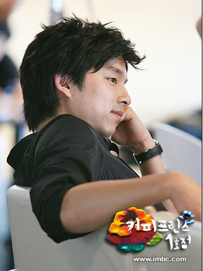
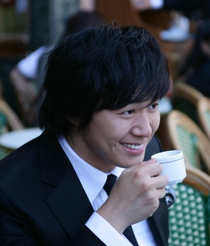

测试生成
沈逸的IT专栏
cherry
cherry
/
八婆笔记
/
爱上单眼皮男生
← XMan之标签人物
XMan之标签人物 →
爱上单眼皮男生
在17杯咖啡的香醇中，
见证了完美的蜕变。
用一种赏心悦目的方式，
留下了难忘的星光~

不需要刻意的造型，
不需要刻意的改变；
总能看到你
伪装背后的温暖和安心。
在不同故事中，
可以干练、
可以深情、
可以调皮、
可以滑稽。
百变生辉中看到的是
那一份的骄傲和坚持！
怀念健宇，
想念纽约早晨的阳光，
也总忘不了内心中那一抹隐藏的脆弱~

可爱，
有什麽不可以；
撒娇，
也可以很完美；
简单的风情最能动人心扉！
← XMan之标签人物
XMan之标签人物 →
导航栏
tvb手册[2]
八婆笔记[2]
最近评论